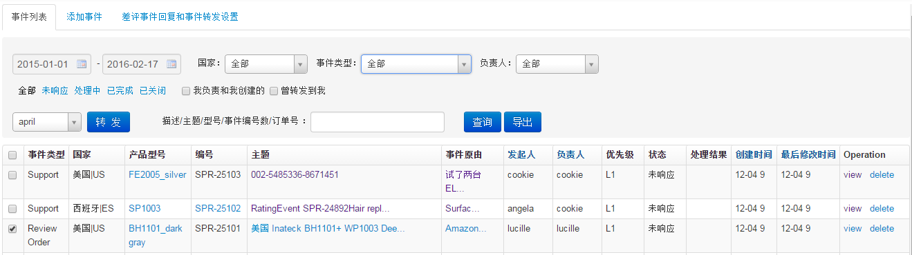

事件管理
事件列表

- 事件类型：Rating，差评事件；Account Rating，账号差评事件；Support，替代事件；Support_Voucher，带凭证替代事件；
Review Order，测试事件；Product Recall，召回产品建立的事件；
- 勾选事件，选择转发按钮前下拉框负责人，点击转发按钮，可以修改事件负责人
- 点击产品型号列链接，查询同国家、同事件类型、同产品型号所有事件；点击事件原由或主题列链接，查看事件明细信息
- 点击view链接，查看事件明细信息；点击delete链接，删除相应事件
事件处理（点击view链接进入事件处理TAB页）
- 点击编辑按钮，编辑事件相关信息；点击增加处理记录，弹出新增记录处理框，填写处理内容保存即可；点击完成事件按钮，弹出处理框，选择result,点击确定按钮，修改事件状态为已完成状态；
点击关闭事件按钮，弹出处理框，选择原因,点击确定按钮，修改事件状态为已关闭状态；选择转发按钮前下拉框负责人，点击转发按钮，修改事件负责人
事件添加
- 填写相关内容保存事件即可
差评事件回复和事件转发设置
- 设置差评事件自动回复内容和自动转发人